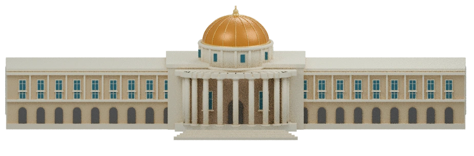

Scroll to turn the building. The view changes; your focus stays on what matters.
MUJheky keeps an eye on SLCM and brings the changes to you.

A faster way to watch marks, published grades and SLCM updates.
This concept uses 32 views rendered from an editable Blender model. Download the 3D model.